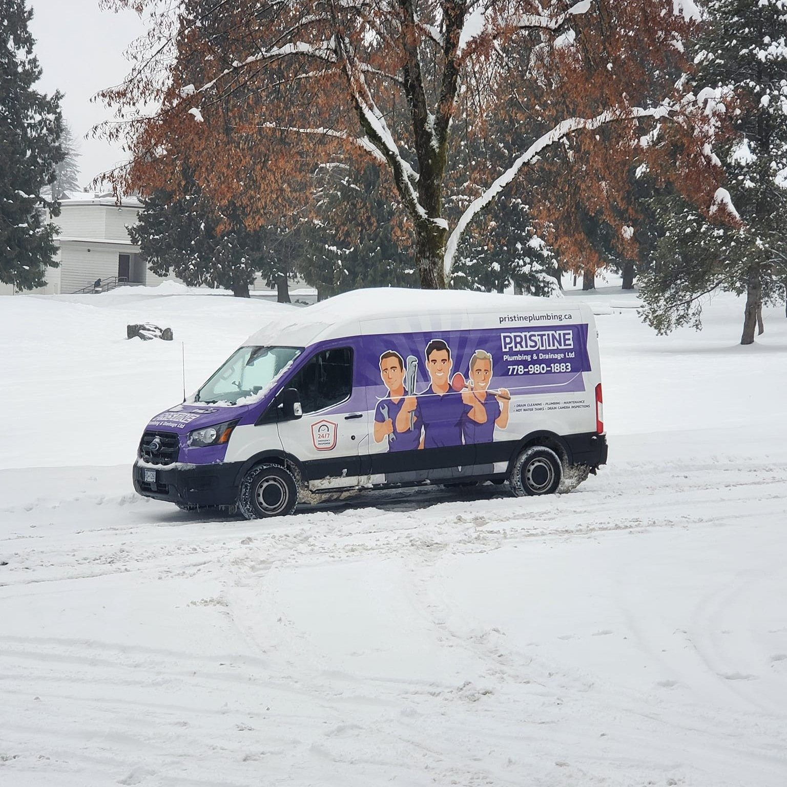

Where we work
Burnaby first, the Lower Mainland every day
Four vans based on Capella Drive in Burnaby. Same-day across the inner suburbs, scheduled visits further out, and the ferry to Bowen Island. Don't see your city? Call, we probably come there too.

Burnaby
Home baseHome base on Capella Drive. Burnaby Heights, Capitol Hill and the Lougheed corridor have plenty of 1950s and 60s homes with original clay-tile perimeter drains, and the SFU/UniverCity towers keep our strata crew busy.
New Westminster
ServedQueen's Park, Sapperton and the West End: some of the oldest housing stock in the region. Water service replacements here often need plumbing and tree-protection permits, which we handle.
Coquitlam
ServedMany 1970s to 1990s homes built with Poly-B supply pipe. We do a lot of repipe walkthroughs and water service upgrades here.
Port Moody
ServedHeavy tree cover means perimeter systems full of pine needles and sediment. We cleaned one out on a job that had never been inspected.
Vancouver
ServedEast Vancouver's combined storm and sanitary outlet lines are prone to root blockages that flood basements. Snake, camera, done.
Surrey
ServedSewer backups, water service breaks and the occasional grounding rod through a sewer line.
Port Coquitlam & Delta
ServedRegular routes for drain cleaning, hot water tanks and strata work.
Bowen Island
ServedYes, we take the ferry. Hot water tank replacements and plumbing repairs for island homes.
Ready when you are, 24/7
Price before work starts. Free home plumbing inspection with every call.